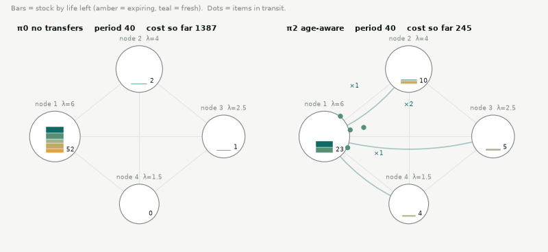
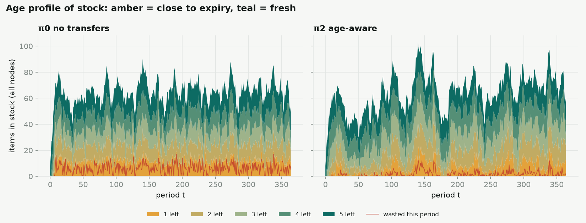
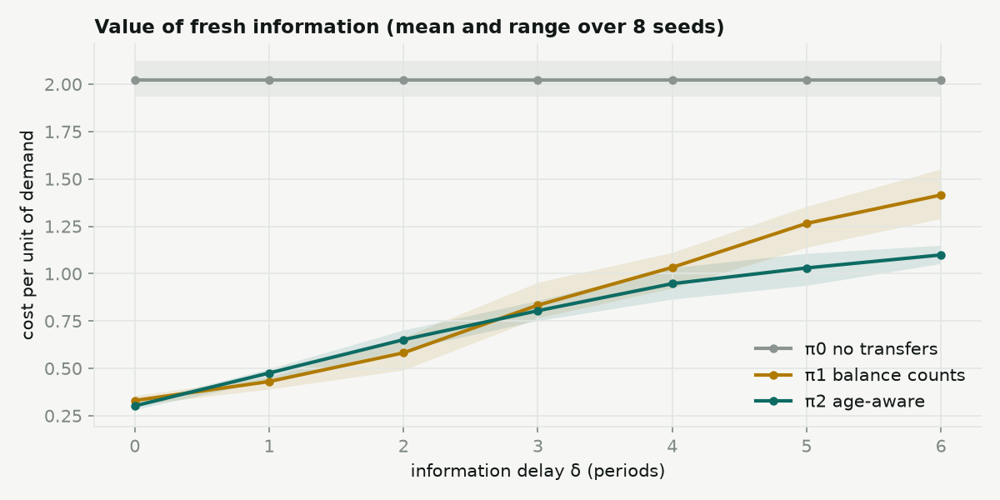
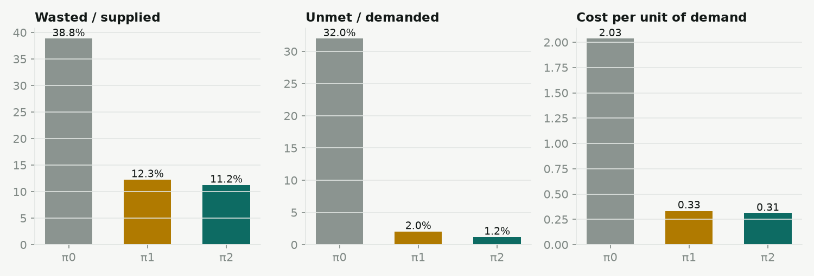

Items arrive at some nodes, demand appears at others, and every item has a use-by period. In Damu Grid the items are platelet units, the nodes are facilities, and L is the shelf life in days. Below, the same random future plays out under two policies, then six short steps explain everything the age-aware engine does.
You need four tools: a running balance, a weighted cost, a mean plus a few standard deviations, and a queue. Each step has a small model you can change.
At node i, let xi(r) be the number of items with r periods of life left. Every period, demand takes the oldest items first, then everything moves one slot closer to expiry. Items still in the last slot are thrown away.
Add up three costs. Running out hurts more than throwing an item away, so p > h.
The ratio that matters is the critical ratio:
Example from the left animation's current period. Changing the policy or the period updates it.
A transfer takes one period, so each node needs enough for about two periods of demand. If demand averages λ per period, two periods have
| β | 0.50 | 0.80 | 0.83 | 0.90 | 0.95 |
|---|---|---|---|---|---|
| z | 0.00 | 0.84 | 0.97 | 1.28 | 1.64 |
The code uses the exact Poisson quantile. The normal rule is usually within one item of it.
Demand uses the oldest items first, at about λ per period. In r periods the node gets through about λ·r items. So fill a bucket for each age, oldest first:
Anything that overflows its bucket will expire on the shelf unless it moves. Items with r = 1 cannot be rescued: they would expire in transit.
The same bucket idea, seen from the receiving node j: how many more items with r periods left could it use in time?
Send each at-risk item to the neighbour with the largest spare capacity, oldest items first. Recount after every move, so two senders never fill the same gap twice.
After the rescue moves, compare each node's stock (including what is on its way) with its target si from step 3. Nodes above target send to nodes below it, oldest sendable items first, because the receiver will use them soon anyway.
π₁ does only this step and sends its freshest items. That one difference, plus the rescue in step 4, is what separates π₂ from π₁.
If decisions use stock counts that are δ periods old, a node may be asked to send items it has already used or lost. The prototype counts these as conflicts. With δ = 0 there are none; raise δ in Settings and watch them appear. The cure is a reservation layer: each node owns a fixed quota it can commit without asking, and only moving quota needs a confirmed message.
Horizon 365 periods. All three policies see identical supply and demand, so the differences come from the policy alone.
| Policy | Wasted ÷ supplied | Unmet ÷ demanded | Moved per period | Conflicts | Cost per unit demand |
|---|
Each row is a “periods left” value, top = fresh, bottom = about to expire. Brighter = more items. Under π₀, stock piles up near expiry; under π₂ it is used while fresher.
The reference engine is the perishnet package in engine/ of the damu-grid repository. Its random-number generator is a bit-for-bit copy of this page's, so the same settings give identical results in both. A test checks five configurations against numbers exported from this page.
damu-grid/engine/
perishnet/
rng.py seeded generator, Poisson draw + quantile
model.py Params, supply/demand streams
policies.py no_transfer, balance_counts, age_aware
simulate.py period loop, full trace
viz.py figures + network GIF
__main__.py command line
tests/ 52 tests: parity, conservation, leases, blood groups
outputs/ generated figures
README.md
# run all three policies, print the table, write figures python -m perishnet --delay 0 --mismatch 0.6 --seed 7 python -m pytest -q # 35 passed
Parity verified Python, seed 7, δ = 0: cost per unit demand 2.035 / 0.334 / 0.310 for π₀ / π₁ / π₂, the same as the table above at default settings.
def at_risk(stock, lam, life): risk, used = [0] * (life + 1), 0 for r in range(1, life + 1): room = max(0, floor(lam * r) - used) # bucket size safe = min(stock[r], room) risk[r] = stock[r] - safe # overflow used += safe return risk def age_aware(obs, P): x = [v[:] for v in obs] incoming = [[0] * len(v) for v in obs] plan = [] risk = [at_risk(x[i], P.lam[i], P.life) for i in range(P.n_nodes)] for r in range(2, P.life + 1): # r = 1 would expire in transit for i in range(P.n_nodes): left = risk[i][r] while left > 0: j, cap = best_receiver(x, incoming, P, i, r) # max spare_j(r) if j < 0: break k = min(left, cap) plan.append((i, j, r, k)) x[i][r] -= k; incoming[j][r] += k; left -= k # step 6: top up shortfalls, oldest sendable first return fill_shortfalls(x, P, range(2, P.life + 1), plan, incoming)
The excerpt folds the receiver search into best_receiver for space; in policies.py it is an inline loop over spare_capacity.




A stochastic dynamic program with state dimension N·L. With δ > 0 it is partially observable. The age-aware policy is a greedy approximation to the per-period two-stage stochastic program.